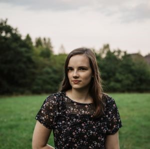
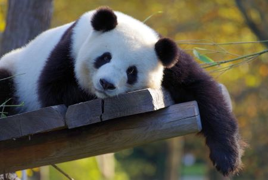

O mně

Jmenuji se Anna Kršková a mám velmi ráda sníh, stejně jako pandy, proto
se na této stránce dočtete více o mém alternativním já - pandě velké.
Panda velká
Narodila jsem se jako savec – větší druh medvěda, a aktuálně žiji v
horských oblastech v Číně, především v Sečuánu. Mé příbuzné můžete
nalézt i v provinciích Šen-si a Kan-su. Do těchto oblastí se náš rod
musel přesunout kvůli zemědělství, odlesňování a dalšího lidského
rozvoje a odešly jsme tak z nížinných oblastí, kde jsme předtím
spokojeně žily. Nějakou dobu jsme byly na seznamu ohrožených zvířat, to
se však v roce 2021 v dobré obrátilo a nyní už tak ohrožené nejsme a
naše populace vesele roste.
Moje služby
Orientační ceník mých služeb
| Služba |
Cena |
| Průvodce v horách |
6 bambusů/hod |
| Jak si užít život na sněhu |
7 bambusů/hod |
| Přednáška o bambusu |
12 bambusů/přednáška |
Kontakt

Pokud byste si rádi popovídali o živobytí v horách, jezení bambusu a
užívání si života na sněhu, neváhejte mi napsat na
email. A tady se můžete podívat, jak
si užívám legraci na sněhu
video.
Oficiální kontakt pro pracovní záležitosti
Panda Velká
Mezi bambusy 13
Sečuán
Čína
IČ: 123456789
E-mail:
annakrskovaak@gmail.com
.jpg)
.jpg)
.jpg)